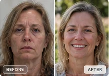
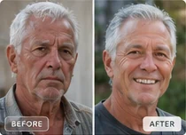
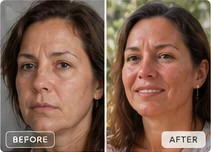
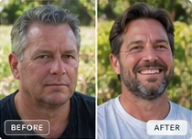

Walter Kelly
Walter describes seeking care for an ankle injury and lower-spine concerns, hoping to avoid long-term pain medication.
ILLUSTRATIVE STORY FORMATView published patient stories ↗Discover regenerative medicine in Panama through personalized consultations, mesenchymal stem cell therapies, an in-house laboratory, and a team focused on individualized care and follow-up.
Explore real patient accounts published by Regeneration Clinic of Panama, including people who traveled from the United States for a medical consultation.

Walter describes seeking care for an ankle injury and lower-spine concerns, hoping to avoid long-term pain medication.
ILLUSTRATIVE STORY FORMATView published patient stories ↗
The clinic features an account involving arthritis after years of sports activity and previous orthopedic treatment.
ILLUSTRATIVE STORY FORMATView published patient stories ↗
A featured U.S. patient account highlights the decision to explore treatment in Panama following persistent health problems.
ILLUSTRATIVE STORY FORMATView published patient stories ↗
The clinic shares Edward’s experience seeking evaluation for neurotoxicity and discussing an individualized approach.
ILLUSTRATIVE STORY FORMATView published patient stories ↗Redesign preview: story summaries are based on the clinic’s public website, but all photographs in these example cards are illustrative and do not depict the named patients or actual before-and-after outcomes. Patient consent and approved original assets are required for launch.
Travel to Panama City for individualized consultations with a locally based clinical team, supported by the comforts, culture, and beauty of Panama.
Illustrative Panama City panorama — generated concept art, not a photograph of the clinic or its actual view.
Regeneration Clinic of Panama describes using mesenchymal stem cells from ethically donated umbilical-cord tissue, with protocols guided by clinical evaluations, diagnostic testing, and individualized follow-up. Its public treatment areas include orthopedic and sports concerns, autoimmune conditions, neurological conditions, and healthy aging. Treatment suitability and evidence vary by indication.
Explore their approach →Meet the leadership named on the clinic’s public website. The portrait images remain design placeholders; visit the company’s website for current official profiles.
MD, MSc · Stem Cell Therapy & Longevity Medicine
See official team profile ↗MSc, PhD · Chief Scientific Officer
See official team profile ↗Chief Executive Officer
See official team profile ↗General Manager / Team Leader
See official team profile ↗Names and roles are drawn from Regeneration Clinic of Panama’s public team page. Portraits are unrelated mockup images; professional credentials and licensing should be confirmed directly before publishing a live site.

A real photograph of the clinic’s team reflects the human side of Regeneration Clinic of Panama, alongside its medical and scientific leadership.
Publicly published clinic team photo. Individual team member identification should be verified before use.Sortis Business Tower · Suite 4 · Panama City, Panama
Regeneration Clinic of Panama lists this as its corporate office address.


The company says it owns and operates an in-house laboratory and offers individualized patient coordination, clinical assessment, treatment planning, and post-care support. The coastal facility photograph shown here is design imagery, not the actual clinic.
Visit the current clinic website →Regeneration Clinic of Panama operates in Panama’s medical environment, separate from U.S. FDA jurisdiction. The clinic describes donated umbilical-cord tissue sourcing, donor infectious-disease screening, laboratory sterility testing, personalized assessment, and follow-up care. Verify specific MINSA authorizations, clinical credentials, treatment status, and laboratory quality documentation with the company and relevant authorities.
Panama’s Ministry of Health (MINSA) and Consejo Técnico de Salud are the relevant regulatory context; no particular company permit is certified by this mockup.
The clinic reports sourcing MSCs from donated umbilical-cord Wharton’s jelly, screening donors for infectious diseases, and performing sterility and endotoxin tests.
The clinic describes diagnostic evaluation, tailored protocols, optional preparatory IVs, treatment sessions, and follow-up support.